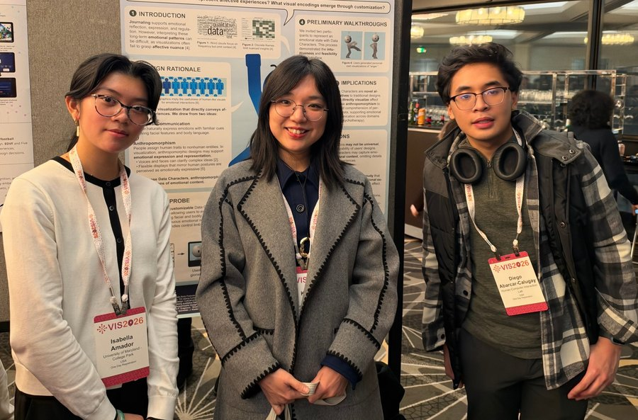
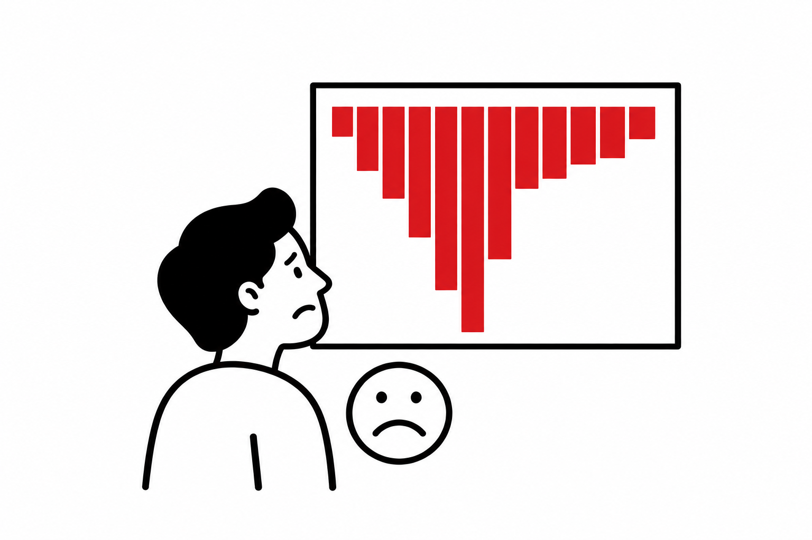

Attended IEEE VIS 2026 New
The collective presented four works at IEEE VIS 2026. Watch the recap
We are a research group at the University of Maryland, College Park, led by Dr. Keke Wu. We study how visualization can reconnect data with human experience. We design new representations and interactive systems that open up alternative ways for people to relate to data, maing it more accessible, expressive and meaningful. We believe that grounding data in people's lives and communities can foster understanding, reflection, and action, and help build a more inclusive data-driven society.
News & Updates

The collective presented four works at IEEE VIS 2026. Watch the recap

“Made to Feel” received a Best Short Paper Award at IEEE VIS 2026.

Maggie Xu joins UMD as a PhD researcher.

“What Cognitive Accessibility Reveals ...” was accepted to the 3rd Workshop on Accessible Visualization.